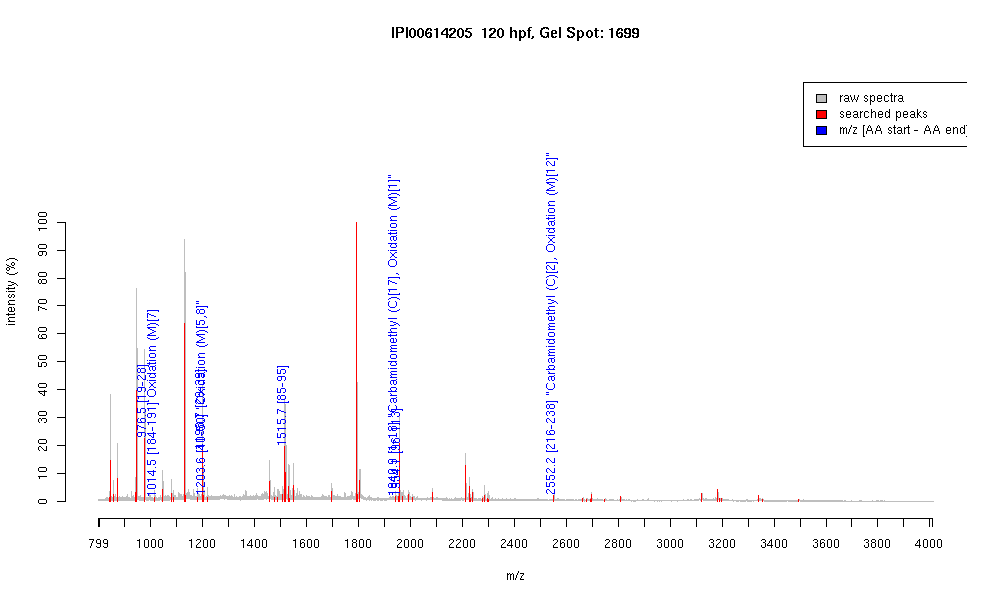

| Name | PREDICTED: similar to beta-cytoplasmic actin2 isoform 1 |
|---|---|
| MW | 29616.8 |
| PI | 5.02 |
| Mascot Protein Score | 87 |
| Masses (matched / unmatched) | 8 / 69 |

| Peptide | MZ (calc) | MZ (observed) | Error (DA) | Error (PPM) | Start | Stop | Modifications |
|---|---|---|---|---|---|---|---|
| AGFAGDDAPR | 976.4482 | 976.4517 | 0.0035 | 4 | 19 | 28 | |
| DLTDYLMK | 1014.4812 | 1014.4851 | 0.0039 | 4 | 184 | 191 | Oxidation (M)[7] |
| AVFPSIVGRPR | 1198.7054 | 1198.7053 | -0.0001 | 0 | 29 | 39 | |
| HQGVMVGMGQK | 1203.5609 | 1203.5599 | -0.001 | -1 | 40 | 50 | "Oxidation (M)[5,8]" |
| IWHHTFYNELR | 1515.7491 | 1515.748 | -0.0011 | -1 | 85 | 95 | |
| MDDEIAALVVDNGSGMCK | 1940.8398 | 1940.9353 | 0.0955 | 49 | 1 | 18 | "Carbamidomethyl (C)[17], Oxidation (M)[1]" |
| VAPEEHPVLLTEAPLNPK | 1954.0643 | 1954.0542 | -0.0101 | -5 | 96 | 113 | |
| LCYVALDFEQEMGTAASSSSLEK | 2552.1531 | 2552.1646 | 0.0115 | 5 | 216 | 238 | "Carbamidomethyl (C)[2], Oxidation (M)[12]" |